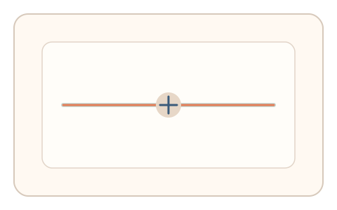
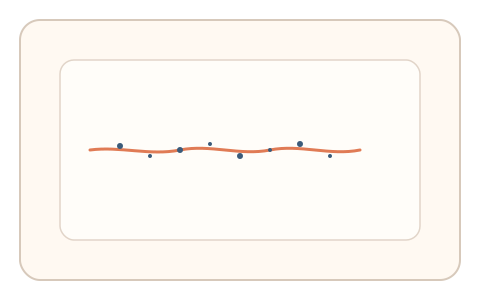
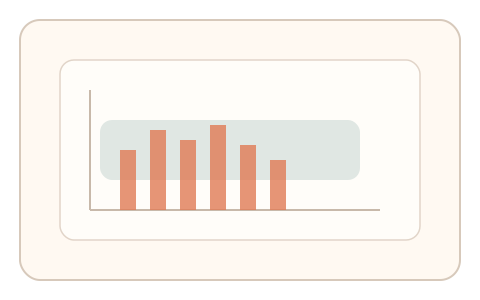

#1
生物肌肉与鼠标运动
已扩展
生物约束锚点
以人类无法消除的生理噪声与运动约束作为验证锚点，强调“身体在场”而非任务答案。
概念原文
CAPTCHA 以人体不可消除的生理限制/噪声/时序波动为基础，设计需要“真实身体在场”的验证，从而形成与机器的结构性差异。
从“能力差距”转向“生理约束差距”，把验证建立在生物噪声与在场性上。
研究背景
人类运动控制受到生理结构与神经控制机制的约束，难以完全消除微抖动、速度波动与短时漂移。行为特征识别也常利用这些细粒度信号进行区分。因此可将“生物约束”作为验证码安全逻辑的底座，把不可避免的生理噪声转化为验证信号。
核心机制
- 设计低负担的连续动作任务，强调稳定控制而非准确命中。
- 高频采集轨迹与时序，提取生理噪声与微漂移特征。
- 允许任务结果存在偏差，仅评估“噪声结构是否像人”。
- 通过短序列任务累计统计，降低偶然波动影响。
用户流程
- 步骤 1：用户看到一个低速控制任务（拖拽/描摹/保持）。
- 步骤 2：用户完成短序列动作，系统采集细粒度轨迹。
- 步骤 3：系统对比生理噪声结构并输出判定。
判定信号
轨迹微抖动频谱与低频漂移
人类肌肉控制存在稳定的生理噪声结构。
速度微波动与过冲‑回拉比例
真实操控呈现连续微调与非线性纠偏。
判定逻辑
构建“人类噪声窗口”，结合抖动谱、微波动与纠偏比例进行多信号一致性判定；过度平滑或过度随机均判异常。
对抗面
- 脚本注入伪随机噪声模拟生理波动
- 重放真实用户轨迹以伪造在场
防御与缓解
- 引入动态参数与随机任务路径，降低重放价值
- 多通道信号耦合（抖动谱 + 速度曲线 + 纠偏）提高伪造成本
- 对噪声过度一致或过度随机进行双向异常检测
可达性与风险
提供等效的低精度通道（阈值调节/节拍点击），并允许放宽噪声阈值，避免对手部障碍用户过度惩罚。
- 设备级平滑或采样率不足会削弱信号
- 特定运动障碍可能触发误拒，需要替代通道
可视化状态

状态 1：生物锚点任务
低速控制任务强调稳定性而非精准命中。

状态 2：微噪声采集
轨迹中包含微抖动与细小纠偏。

状态 3：噪声窗判定
对比噪声谱与纠偏比例，形成判定结果。
参考资料
Motor control
说明人类运动控制的生理基础。
Physiological tremor
说明不可避免的生理性微颤。